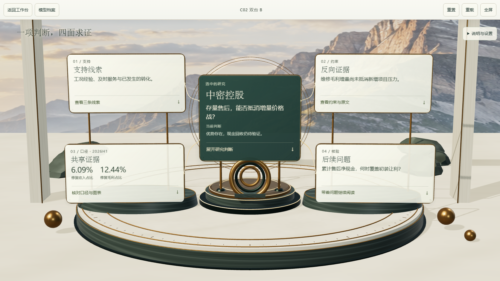

C02 READING PAVILIONS · 0.1.0-preview.2
让判断有主次，让空间重新可见。
同一台 Windows 浏览器、1672 × 941 视口、完全一致的相机。缩小四个侧面索引，明确中央判断，并实际修改玻璃构件、支架、连接线和材质。原始 GLB 文件保留。
WebGL 为 SwiftShader 软件渲染。硬件 GPU、真实手机与用户视觉验收尚未完成。下方图片可点击查看原尺寸。



五张卡片的屏幕包围框总面积减少 33.2%；这是布局尺寸比较，不是遮挡像素或性能评分。中央密封环是本轮原创的工业意象，不是具体产品的复制品或研究证据。
完整阅读与独立页面


1440 × 900 空间索引 · 390px 完整阅读 · 390px 完整主页 · 390px 银行公开节选


窄屏图片来自桌面浏览器视口仿真。索引→完整段落→原稿锚点，以及证据、历史、复盘导航已实际点击核对。新版模块、入口与样式带版本参数，避免缓存继续显示上一轮画面。